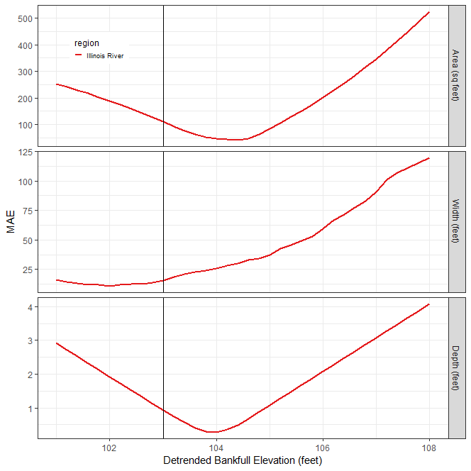

13 Level 2 Workflow
This chapter describes the workflow steps necessary to complete a Level 2 (L2) FluvialGeomorph analysis. The purpose of this level is to calculate bankfull channel dimensions.
Create Initial Riffle Geometry
The purpose of this stage is to identify and map riffle cross sections and roughly estimate an initial bankfull elevation for the base year for each reach.
Create Riffle Floodplain
The purpose of this step is to identify riffle locations and map these cross sections across the lateral extent of the floodplain for each reach.
A riffle is a shallow river landform where water flows in a steep, thin sheet (luna_bergere_leopold_river_1957?). Riffles can be identified with the help of the channel_slope raster calculated in Level 1, and confirmed with high resolution aerial imagery. In the channel_slope raster, pools appear as relatively smooth areas of low slope due to the absence of LiDAR points (deep water absorbs laser pulses). Shallow water riffles appear as highly textured areas of relatively higher slope between pools due to the higher number of LiDAR points from the exposed bed material.
- Create a new line feature class named
riffle_floodplainto store riffle cross sections. This feature class must use the same coordinate system as the vector datasets of the project. Add the following fields:ReachName: Text (50) - The purpose of this field is to store the reach name.Seq: long integer - The purpose of this field is to uniquely identify each cross section.
Riffle Identifying Characteristics:
- A straight reach between two meander bends, areas in the cross-overs between river bends
- Clear indicators of the active floodplain or bankfull discharge
- Presence of one or more terraces
- Channel section and form typical of the stream
- A reasonably clear view of of geomorphic features
- Areas of high water surface slope (in the case of high gradient streams)
- Areas of minimum depth and width
- Channel width parallel and consistent
- Avoid tributary influences
- Cross sections should be drawn wide enough to capture the top of bank
Digitize Riffles
- Digitize riffle cross sections beginning with the left descending bank. While editing, use the “Reverse Direction” command (aka flip) to ensure riffles are digitized in the correct direction.
- A red vertex denotes the end of a line segment. Therefore, the red end vertex should be on the right descending bank.
- Check that each cross section is digitized in the correct direction (start at the left descending bank and end on the right descending bank) before going on to the next step.
- Ensure that riffle cross sections are digitized to the full width of the active floodplain. Edit each
riffle_floodplainfeature to ensure that it extends at least to the edge of theFloodplain Masklayer, but no further. - This ensures that each
riffle_floodplainfeature covers the entire floodplain, but does not extend too far into the uplands.
- For a site with multiple reaches, riffle cross sections must be uniquely numbered across all reaches. The
Seqfield values of riffle cross sections should not repeat within the reaches of a site. - The downstream-most cross section in the site should be numbered starting with the
Seqfield value of 1 and increase moving upstream. - If necessary, use the
13a - XS Resequencetool to set the startingSeqvalue for each reach. - Set the
Seqfield value for each upstream reach to the upstream-most value (i.e., the highestSeqvalue of the downstream reach’s riffle cross section feature class) of the downstream reach. For example, set theSeqof the Reach-2 riffle cross section feature class to 18 if the maximum value of Reach-1’s riffle cross section feature classSeqfield is 17.
Assign Cross Section IDs
The purpose of this step is to ensure that riffle cross section identifiers are properly assigned. Assignment of cross section unique identifiers is critical for later tools to uniquely identify each cross section.
- Assign integer values to the
Seqfield starting with one. Begin numbering at the downstream extent of the study area and moving upstream.
Calculate Cross Section Watershed Area
The purpose of this step is to calculate the watershed area for each riffle cross section.
- From the study area geodatabase, use the
watershed_contributing_arearaster that covers the entire contributing watershed of the study area.
- Use the ERSI
Clip Rastertool to clip thewatershed_contributing_arearaster tostream_network_bufferto speed tool run time. - Add the
contributing_area_bufferraster to a map and symbolize with a “hot-cold” stretch renderer. - Add the
flowlineand regular cross section features classes to the map. Place them on top of thecontributing_area_bufferraster. - Determine the maximum distance from the intersection of each cross section and the
flowlineto the nearest pixel of high flow in thecontributing_area_bufferraster. This value will be used for thesnap_distancein the next step. - Use the
12 - XS Watershed Areatool to calculate the watershed area for each cross section. - For the
flow_accumparameter, use thecontributing_area_bufferraster. - For the
snap_distanceparameter, use the distance you calculated in a previous step.
Calculate Cross Section River Position
The purpose of this step is to calculate the river position for each riffle cross section.
- Use the
13 - XS River Positiontool to calculate the distance to the mouth of the river for each cross section. - The river position of each cross section will be used in later steps to calculate several channel parameters (i.e., gradient, sinuosity).
Create Riffle Channel
The purpose of this step is to edit the lateral extent of the riffle_channel feature class to just cover the initial channel extent. This allows a more detailed examination of the channel area.
- In the Catalog window, make a copy of the
riffle_floodplainfeature class and name itriffle_channel. - Edit each
riffle_channelfeature to ensure that it extends at least to the edge of theChannel Masklayer, but no further. This ensures that eachriffle_channelfeature covers the entire channel, but does not extend too far into the floodplain. - Use snapping to ensure that vertices of the
riffle_channelfeatures are coincident with the overlappingriffle_floodplainfeatures.
Calculate Cross Section Points
The purpose of this step is to convert each riffle cross section into a set of evenly stationed points and assign DEM and detrended elevation values.
- Use the
14 - XS Pointstool to calculate cross section station points for each cross section. - The
station_distanceparameter should be set to approximately the resolution of the DEM. For example, if the DEM has a cell size of 1 foot (0.3048 meter), set thestation_distanceto that distance (using the linear units of the coordinate system used for the project’s vector data). - This tool creates a new feature class named
<cross section feature class name>_points. - Repeat this step for both the
riffle_floodplainandriffle_channelfeature classes.
Calculate Initial Cross Section L2 Dimension
The purpose of this step is to calculate the initial L2 dimensions for the the riffle cross sections for each reach. Repeat the following steps for both the riffle_floodplain and riffle_channel feature classes.
Determine the moving window size
Many stream metrics are scale dependent, meaning these metrics are affected by the size of the moving window used in their calculation. To determine the appropriate size of the moving window for this reach, use the following steps:
- Many stream metrics are typically calculated using a moving window size equal to two meander wavelengths.
- Using the initial
Channel Masklayer that you created earlier, estimate the typical bankfull width for the reach. - Estimate the length of two meander wavelengths by multiplying the bankfull width estimated in the last step by 10 (e.g., 30ft bankfull width * 10 = 300ft, two meander wavelengths).
- Determine how many cross sections two meander wavelengths represent. For example, if riffle cross sections are spaced about 300ft apart, then two meander wavelengths would be 1 riffle cross section (i.e., 300ft / 300ft between riffle cross sections).
Calculate Initial L2 Dimensions
- Use the
15b - XS Dimensions, Level 2tool to calculate L2 dimensions. - Set the
xs_fcparameter to the regular cross sections feature class you created in a previous step. - Set the
lead_nparameter to the number of upstream cross sections that you calculated in a previous step. - If the elevations in the channel seem noisy, check the
use_smoothingparameter and set theloess_spanparameter to a value between 0-1. - Confirm that the
vert_unitsof the DEM are in feet.
Confirm the degree of smoothing
- Use a chart to verify the choice of the smoothing
loess_spanparameter in the*_dims_L2feature class. - Right-click on the
*_dims_L2feature class in the map table of contents and select “Create Chart”, and select “Line”. In theDate or Numberdropdown, choose the fieldPOINT_M. In theAggregationdropdown, chooseNone. In theNumeric field(s)checklist, check the boxes next toZandZ_smooth. Click theApplybutton to view the chart. - Visually assess the degree of smoothing. The smoothing should be high enough to eliminate LiDAR elevation noise, but not so high as to eliminate meaningful channel elevation change.
- If the smoothing is not ideal, re-run the tool and adjust the
loess_spanparameter.
Estimate Bankfull
The purpose of this stage is to estimate the detrended bankfull elevation for the base year for each reach. This report conducts a sensitivity analysis using the regional curve estimates of channel dimensions across a range of elevation values to identify the detrended bankfull elevation value that best fits the regional curve estimate.
Run the Estimate Bankfull Report
The purpose of this step is to run the Estimate Bankfull report for each reach.
- In the
Reportstoolset, use theL2 Estimate Bankfulltool to produce the Estimate Bankfull Report. - For the
streamparameter, use the value of theReachNamefield used in theflowlinefeature class. - For the
flowline_fcparameter, enter theflowlinefeature class for the base year survey. - For the
xs_dims_fcparameter, use theriffle_channel_dims_L2feature class calculated for the base year. - The
xs_points_ch_*parameter set requires ariffle_channel_pointsfeature class. These feature classes should be entered with the feature class for the most recent survey first (i.e., the base year) and then the previous surveys in reverse chronological order (e.g., 2016, 2010, 2006). - The
xs_points_fp_*parameter set requires ariffle_floodplain_pointsfeature class. These feature classes should be entered with the feature class for the most recent survey first (i.e., the base year) and then the previous surveys in reverse chronological order (e.g., 2016, 2010, 2006). - The
survey_name_*parameters are used to label the surveys in maps and graphs. - The feature classes and labels used for the
xs_points_*andsurvey_name_*parameters must be entered in the same order (e.g., 2016, 2010, 2006) in each set of numbered parameters. - For the
features_fcparameter, enter thefeaturesfeature class for the base year survey. - For the
demparameter, enter the DEM for the base year survey. - For the
regionsparameter, select the regions to use for estimating the bankfull water surface elevation. - For the
from_elevationparameter, specify the lowest detrended elevation value to use for sensitivity analysis. - For the
to_elevationparameter, specify the highest detrended elevation value to use for sensitivity analysis. - For the
by_elevationparameter, specify the value to increment the sequence betweenfrom_elevationandto_elevation. - The three values (i.e.,
from_elevation,to_elevation, andby_elevation) define the sequence used for the sensitivity analysis. - For the
bf_estimateparameter, specify the detrended elevation value that represents the bankfull water surface elevation.
Perform QA
The purpose of this step is to use the QA Checklist to verify the reports have run correctly and identify any data mistakes that need to be corrected.
- Follow the instructions in the QA Checklist Chapter, Estimate Bankfull Report section, to verify that the reports have run correctly.
- Make the required changes suggested in the QA Checklist and rerun the report.
- Repeat these QA iterations until the reports are correct.
Determine Bankfull Elevation
The purpose of this step is to interpret the Estimate Bankfull Report to determine the final detrended bankfull elevation to be used for the rest of the analysis for each reach. The L2 Estimate Bankfull tool is intended to be run iteratively, testing the fit of a range of detrended bankfull elevations against different regional curves.
- From the initial Estimate Bankfull Report, use the Bankfull Elevation Goodness of Fit sensitivity analysis graph to examine the effect of choice of detrended bankfull elevation on the error statistic.
- Identify the detrended bankfull elevation that minimizes error on the Bankfull Elevation Goodness of Fit sensitivity analysis graph.
- In the example figure below, the detrended bankfull elevation of 104 ft. minimizes error (y-axis Mean Average Error) for both area and depth. Although 102 ft. appears to be the detrended elevation that minimizes error for width, 104 ft. does a better job for area and depth. Using the logic of “best two out three”, a detrended bankfull elevation of 104 ft. could be chosen for this reach and will be used for later steps in this analysis. However, other criteria could be used depending on the goals of your study.
- Rerun the report using the value chosen in the previous step.
Create Bankfull Area
The purpose of this step is to use the final bankfull elevation determined in the previous step to derive a final bankfull_area polygon for each reach.
- From the final Estimate Bankfull Report, use the detrended bankfull elevation identified in the last step. In the example above, this value was 104 ft.
- Use the
08 - Water Surface Extenttool to extract a bankfull area polygon. This tool creates a new polygon feature class namedbanks_raw_xxx, where xxx is the detrended elevation specified. - The
banks_raw_xxxfeature class must be edited to select only the polygons that represent the bankfull area polygon(s). - Open the attribute table for the
banks_raw_xxxfeature class and use advanced sorting to sort first bygridcodeand then byShape_Area. - Polygons with
gridcode= 1 are polygons inundated at the detrended elevation. - Typically, the polygons with the largest area represent the channel.
- Begin by selecting
gridcode= 1 polygons with the largest area until the entire bankfull area is selected. - Export these selected features to a new feature class named
bankfull_area. - Delete the
banks_raw_xxxfeature class.
Create Banklines
The purpose of this step is to convert the bankfull_area polygon into polylines and edit into a banklines feature class for each reach. The banklines feature class will have two records, one representing the left descending bankline and another the right descending bankline for the stream reach.
- Use the ESRI
Polygon To Linetool to convert thebankfull_areapolygon feature class to a new polyline feature class namedbanklines. - Add the following fields to the
banklinesfeature class:ReachName: Text (50) - The purpose of this field is to store the reach name.bank_id: Long Integer - The purpose of this field is to uniquely identify each bank.bank: Text (50) - The purpose of this field is to designate which bank is theright descendingbank and which is theleft descendingbank.
- Start editing the
banklinesfeature class. - Use the ESRI
Explode Multipart Featuretool to explode any multipart line feature in thebanklinesfeature class. - Add the
flowlinefeature class to the map. - Use the ESRI
Split Toolto split the line features at the downstream and upstream ends of theflowlinefeature class. - The features in the
banklinesfeature class should not extend past the end of theflowlinefeature. - Use the ESRI
Split Toolto trim any tributaries from thebanklinesfeature class. - The goal of this step is to have only two features, one representing the left descending bankline and another the right descending bankline. Delete all other line features.
- Ensure that the banklines are digitized in the upstream direction (like a
flowlinefeature). Edit thebanklinesfeature class to ensure that each bankline is digitized beginning with the downstream end and digitized upstream. - While editing, select a
banklinefeature, choose to edit vertices. Ensure that the red endpoint is at the upstream end of each bankline. - Use the “Reverse Direction” command (aka flip) to ensure each bankline is digitized in the upstream direction.
- Check that each bankline is digitized in the upstream direction (red endpoint at the upstream end) before going on to the next step.
- In the
ReachNamefield enter the reach name. - In the
bankfield, enter the stringright descendingorleft descendingto designate which bank each line represents. - In the
bank_idfield enter a1for theright descendingbank and2for theleft descendingbank.
Create Final Centerline
The purpose of this step is to create a stream centerline. The centerline represents the rough midline of the stream between the banklines.
- Use the
10 - Centerlinetool to create acenterlinepolyline feature class representing the stream midline at the bankfull water surface elevation.
Calculate Final L2 Cross Section Geometry
The purpose of this stage is to use the bankfull elevation determined in the last stage to calculate the final level 2 cross section dimensions for the base year for each reach.
Calculate Final Cross Section L2 Dimensions
The purpose of this step is to calculate the final L2 dimensions for the regularly spaced and riffle cross section feature classes for each reach. Repeat the following steps for regular spaced cross section feature class, the riffle_floodplain feature class, and the riffle_channel feature class.
Determine the moving window size
Many stream metrics are scale dependent, meaning these metrics are affected by the size of the moving window used in their calculation. To determine the appropriate size of the moving window for this reach, use the following steps:
- Many stream metrics are typically calculated using a moving window size equal to two meander wavelengths.
- Using the
bankfull_areafeature class, estimate the typical bankfull width for the reach. - Estimate the length of two meander wavelengths by multiplying the bankfull width estimated in the last step by 10 (e.g., 30ft bankfull width * 10 = 300ft, two meander wavelengths).
- Determine how many cross sections two meander wavelengths represent.
- For riffle cross section for example, if they are spaced about 300ft apart, then two meander wavelengths would be 1 riffle cross section (i.e., 300ft / 300ft between riffle cross sections).
- For regular cross section for example, if they are spaced about 100ft apart, then two meander wavelengths would be 3 regular cross sections (i.e., 300ft / 100ft between regular cross sections).
Calculate Final L2 Dimensions
- Delete the initial Level 2 dimensions
*_dims_L2feature classes created earlier in Level 2. - Use the
15b - XS Dimensions, Level 2tool to calculate final L2 dimensions. - Set the
xs_fcparameter to the cross sections feature class. - Set the
lead_nparameter to the number of upstream cross sections that you calculated in a previous step depending on the type of cross section (i.e., regular cross section, riffle cross section). - If the elevations in the channel seem noisy, check the
use_smoothingparameter and set theloess_spanparameter to a value between 0-1. - Confirm that the
vert_unitsof the DEM are in feet.
Confirm the degree of smoothing
- Use a chart to verify the choice of the smoothing
loess_spanparameter in the*_dims_L2feature class. - Right-click on the
*_dims_L2feature class in the map table of contents and select “Create Chart”, and select “Line”. In theDate or Numberdropdown, choose the fieldPOINT_M. In theAggregationdropdown, chooseNone. In theNumeric field(s)checklist, check the boxes next toZandZ_smooth. Click theApplybutton to view the chart. - Visually assess the degree of smoothing. The smoothing should be high enough to eliminate LiDAR elevation noise, but not so high as to eliminate meaningful channel elevation change.
- If the smoothing is not ideal, re-run the tool and adjust the
loess_spanparameter.
Add Modeled Water Surface Elevation
The purpose of this optional step is to add an HEC-RAS hydraulic model estimated water surface elevation (if available) to a cross section dimension feature class.
- Use the
16 - XS RAS Watersurfacetool to add a modeled water surface elevation field to the input cross section feature class. - Use the
RAS_model_nameparameter to distinguish between multiple RAS model scenarios.
Run Report
The purpose of this stage is to produce the Level 2 report for each reach.
Run the L2 Report
The purpose of this step is to run the L2 report for each reach.
- In the Reports toolset, use the
Level 2 Reporttool to produce the Level 2 Report. - For the
streamparameter, use the value of theReachNamefield used in theflowlinefeature class. - For the
flowline_fcparameter, enter theflowlinefeature class for the base year survey. - For the
xs_dims_fcparameter, use the*_dims_L2feature class calculated for the regular cross sections of the base year. - The
xs_points_*parameters should be entered with the feature class for the most recent survey first (i.e., the base year) and then the previous surveys in reverse chronological order (e.g., 2016, 2010, 2006). - The
survey_name_*parameters are used to label the surveys in maps and graphs. - The feature classes and labels used for the
flowline_points_*,xs_points_*, andsurvey_name_*parameters must be entered in the same order (e.g., 2016, 2010, 2006) in each set of numbered parameters. - For the
demparameter, enter the DEM for the base year survey. - For the
banklines_fcparameter, enter thebanklinesfeature class created for the base year survey.
- For the
features_fcparameter, enter thefeaturesfeature class for the base year survey. - For the
bf_estimateparameter, specify the detrended elevation value that represents the bankfull water surface elevation. - For the
regionsparameter, select the regions to use for estimating the bankfull water surface elevation.
Perform QA
The purpose of this step is to use the QA Checklist to verify the reports have run correctly and identify any data mistakes that need to be corrected.
- Follow the instructions in the QA Checklist Chapter, Level 2 Report section, to verify that the reports have run correctly.
- Make the required changes suggested in the QA Checklist and rerun the report.
- Repeat these QA iterations until the reports are correct.
Determine Next Steps
The purpose of this step is to determine what further steps need to be taken.
- Review the results of the Level 2 Report and determine if the project goals require proceeding to developing the Level 3 analysis.